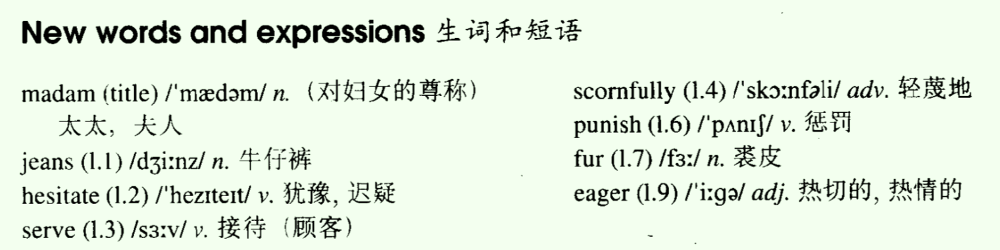
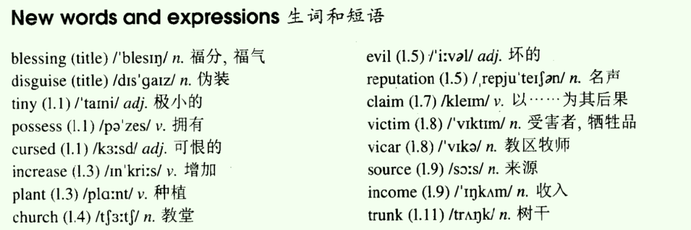
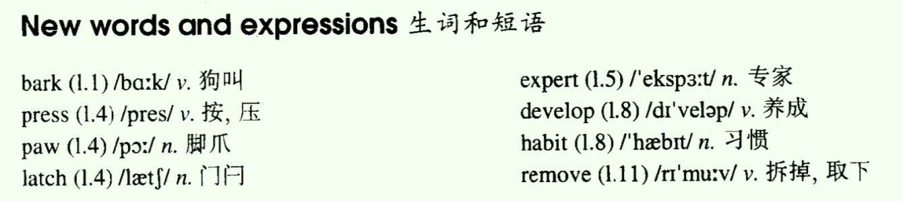
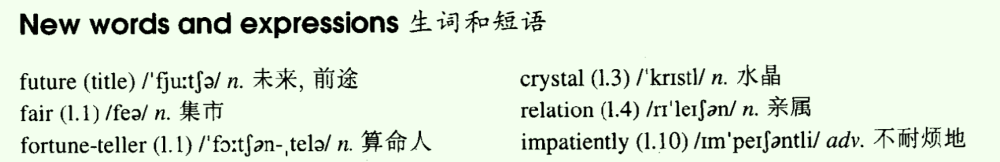
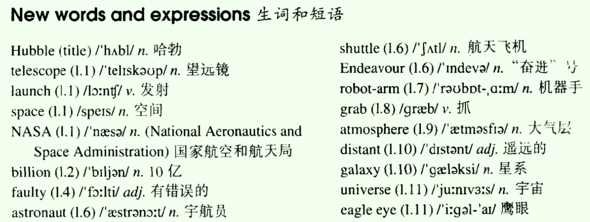
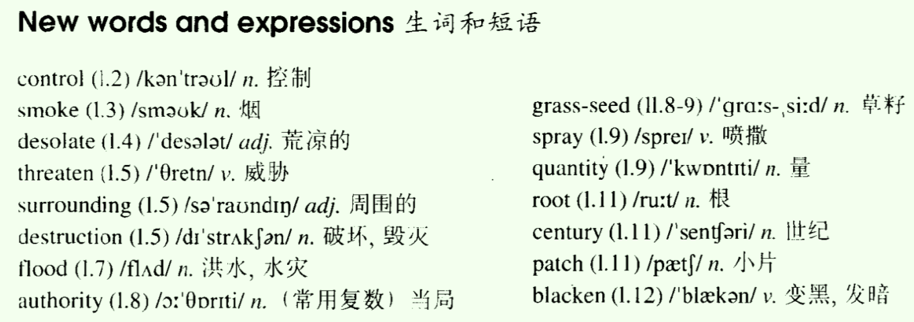
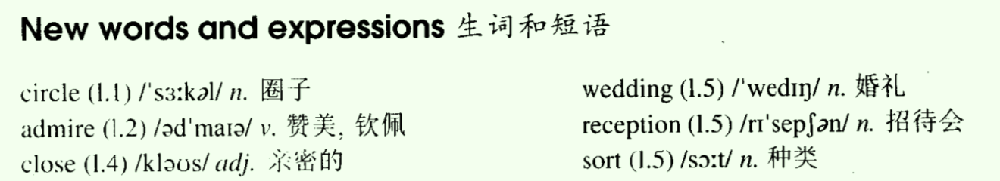
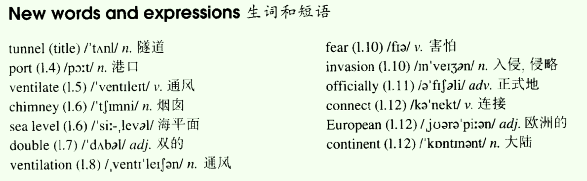

- Lesson 57 Can I help you, madam?
- Lesson 58 A blessing in disguise?
- Lesson 59 In or out?
- Lesson 60 The future
- Lesson 61 Trouble with the Hubble
- Lesson 62 After the fire
- Lesson 63 She was not amused
- Lesson 64 The Channel Tunnel
Lesson 57 Can I help you, madam?
一、单词讲解
1、jeans：n. 牛仔裤；
- 裤子两条腿，都是以s结尾的，比如：trousers、pants；
- a pair of jeans：一条牛仔裤
2、serve：v. 接待（顾客）、服务；
- service：n. 服务；
3、scornfully：adv. 轻蔑地；
- scornful：adj.
- scorn：n./v. 轻蔑、藐视、鄙视；
4、fur：裘皮；
- a fur coat：一件毛皮外套
5、eager：adj. 热切的、热情的；
- be eager for sth.：热切为...
- The man is eager for success.
- be eager to do sth.：热情作某事
- The stranger was eager to help me.
- be eager for sth.：热切为...
All

二、课文&语法讲解
1、本文重点
- 复习介词（L9表示时间的介词，L33表示地点的介词）
2、课文
- Did the woman get what she wanted?
- A woman in jeans stood at the window of an expensive shop.
- 地点、时间点：使用at；
- Though she hesitated for a moment, she finally went in and asked to see a dress that was in the window.
- The assistant who served her did not like the way she was dressed.
- dress：n. 连衣裙； v. 穿衣；
- Glancing at her scornfully, she told her that the dress was sold.
- 看的那一点都用at，比如瞄准aim at等；
- The woman walked out of the shop angrily and decided to punish the assistant next day.
- She returned to the shop the following morning dressed in a fur coat, with a handbag in one hand and a long umbrella in the other.
- dressed in a fur coat：过去分词短语作状语，表示伴随状态
- After seeking out the rude assistant, she asked for the same dress.
- seek out：找出、找到
- Not realizing who she was, the assistant was eager to serve her this time.
- Not realizing who she was：现在分词短语的否定形式
- With great difficulty, he climbed into the shop window to get the dress.
- with great difficulty
- As soon as she saw it, the woman said she did not like it.
- She enjoyed herself making the assistant bring almost everything in the window before finally buying the dress she had first ask for.
- enjoy oneself ding sth.：享受某人自己做某事
- make sb. do sth.：使某人做某事
三、知识扩展
- 1、though
- Though she hesitated for a moment, she finally went in ...
- “尽管...”
- 引导让步状语从句
- 明让步，暗转折：though、although、even though，可以放在句首、句尾
- 明转折：but，要放在两个句子之间
Lesson 58 A blessing in disguise?
一、单词讲解
1、blessing：n 福分、福气；
- bless：v. 保佑；
- God bless you!
2、disguise：n. 伪装；
- a blessing in disguise：处于伪装当中的福气 =》因祸得福
- v. 伪装；
- disguise one's voice
3、possess：v. 拥有；
- own、have
- possession：n. 拥有；
4、cursed：adj. 可恨的；被诅咒的；
- curse：v. 诅咒、咒骂；
- a cursed tree
5、increase：v. 增加、上涨；
- 类似的：rise、grow up、go up、climb
- The population of China increased greatly in the last decade.
- decrease：v. 减小、降低、下降；
- 类似的：decline、go down、drop、fall
6、plant：v. 种植、安放；
- plant a tree
- plant a bomb：安放一个炸弹
7、evil：adj. 坏的、邪恶的；n. 邪恶、罪恶、坏事；
- gain/get + an evil reputation：获得一个坏名声
8、reputation：n. 名声；
- 类似的：name、fame
- reputation、name：中性词，可指好的或坏的名声
- fame：通常指好的名声
9、claim：v. 领取、索取；
- The hurricane claimed hundreds of victims. 以...其后果
- claim the baggage：领取行李
- v. 声称、主张、断言；（比较坚定地说）
- She claimed she had won the match.
10、source：n. 来源
- the source of income/information
11、trunk：n. 树干、箱子（后备箱）、大象的鼻子；
All

二、课文&语法讲解
1、本文重点
- 复习被动语态（L10、L21、L34）
- 双宾语的被动语态
- 强调句
2、课文
- Why dose the vicar refuse to cut down the tree?
- The tiny village of Frinley is said to possess a 'cursed tree'.
- 被动语态：L10、L21、L34
- be said to do sth.：据说去做某事
- 据说死去的人会在这一天回到他们的家。
- The dead are said to return to their homes on this day. L96
- The tiny village of Frinley：“弗林立这个小村庄”，介词of这里表示的是同位关系
- Because the tree was mentioned in a newspaper, the number of visitors to Frinley has now increased.
- the number of + 可说名词的复数：表示“...的数量”；以上作主语，后接单数动词
- a number of + 可说名词的复数：表示“许多、大量的...”；以上作主语，后接复数动词
- The number of the students is (is/are) 5000.
- A number of students are (is/are) coming here.
- The tree was planted near the church fifty years ago, but it is only in recent years that it has gained an evil reputation.
- but it is only in recent years that it has gained an evil reputation.
- only in recent years it has gained an evil reputation：把it is ... that ...去掉，句子的意思仍然完整成立
- it is ... that ...：强调句
- but it is only in recent years that it has gained an evil reputation.
- It is said that if anyone touches the tree, he will have bad luck; if he picks a leaf, he will die.
- 不是强调句，而是主语从句后置
- be said：被动语态
- 条件句
- Many villagers believe that the tree has already claimed a number of victims.
- The vicar has been asked to have the tree cut down, but so far he has refused.
- has been asked：现在完成时的被动
- have sth. done：使某事被做（让其他人去做某事）L66
- have the tree cut down：cut down是动词have的宾语the tree的补足语
- so far：截止到现在；
- He had pointed out that the tree is a useful source of income, as tourists have been coming from all part of the country to see it.
- as：这里表示原因，相当于because；
- have been coming：现在完成进行时（强调持续进行的过程）；L52、L53
- had pointed：现在完成时（强调结果）
- to do：不定式表示目的
- In spite of all that has been said, the tourists have been picking leaves and cutting their names on the tree-trunk.
- In spite of：不能接句子，只能接词；L17
- In spite of all that has been said：为介词短语，在句中作让步状语；
- 定语从句、现在完成时的被动；
- 现在完成进行时、并列句
- In spite of：不能接句子，只能接词；L17
- So far, not one of them has been struck down by sudden death!
- strike down：击倒；
- 现在完成时的被动；
3、强调句
- 口语中，想表示强调某一部分内容，是十分简单的，只需要将内容加重音、长音即可；
- 书面语中，使用句型来进行强调，借助形式；
- 写法：把一个普通的句子拆分两半，塞进去就可以了。
- 构成：
- It is + 强调的部分 + that + 句子余下的部分.
- It is only in recent years that it has gained an evil reputation.
- I want to go to America this summer.
- 强调America： It is America that I went to go to this summer.
- It is + 强调的部分 + that + 句子余下的部分.
- 变化：
- It is（现在）/was（过去）... that/who + 句子余下的部分.
- 一般，强调都是对于既定的事实（过去的、现在的），很少有将来；
- 英语中的潜规则：所有没有将来的，使用现在的来代替；
- 强调的是人，可以使用who；
- It is（现在）/was（过去）... that/who + 句子余下的部分.
- 练习：
Tomwent camping with Jenny.- It was Tom that/who went camping with Jenny.
- We used to have meetings
in the cafe.- It was in the cafe that we used to have meetings.
- Men can solve the problems of natural disaster
only by controlling the environment pollution.- It was only by controlling the environment pollution that men can solve the problems of natural disaster.
- 不能强调什么?
- 形容词、动词不可以强调。
- 原因是：强调句来源于一个句子拆成两半，因此将it was that去掉还原回去，还需要是一个完整的句子。
- It was obvious that he was very embarrassed.
- It is said that he has returned from England.
- 以上都不是强调句！而是之前学习的主语从句的后置（形式主语it）。L43、L51
三、知识扩展
- 1、双宾语的被动语态
- 两个宾语都可以提前，有两种被动；（主动也有两种）
- She gave me a pen. = She gave a pen to me.
- I was given a pen by her. = A pen was given to me by her. （挨着动词的宾语提前，后面照写）
- The manager offered the vacant post to him.
- The vacant post was offered to him by the manager.
- The manager offered him the vacant post.
- He was offered the vacant post by the manager.
- He was offered the vacant post by the manager.
Lesson 59 In or out?
一、单词讲解
1、press：v. 按、压；
- press the button
- press any key to continue
- n. 出版社、新闻界；
- Foreign Language Teaching and Research Press
- pressure：n. 压力；
- relieve the pressure
- the pressure of life/work
2、develop：v. 养成、发展；
- develop a bad/good habit
- a developing country
- a developed country
3、All

二、课文&语法讲解
1、本文重点
- 复习50~58课
- so that ... / so ... that
2、课文
- Why did Rex run away?
- Our dog, Rex, used to sit outside our front gate and bark.
- Every time he wanted to come into the garden he would bark until someone opened the gate.
- every time：可以后面加一个句子，表示”每一次...时候“，引导时间状语从句
- As the neighbours complained of the noise, my husband spent weeks training him to press his paw on the latch to let himself in.
- complain of/about ...
- spend + 时间/钱 + on sth./(in) doing sth.
- train sb. to do sth.：训练某人作某事
- to do：表示目的，通常有一个完整的句子配合着；
- 表示目的，还有：to do/in order to do/so as to do
- I am coming to see you.
- I am coming：一主一谓，完整的句子；
- Rex soon became an expert at opening the gate.
- become an expert at ...：在某方面称为专家
- However, when I was going out shopping last week, I noticed him in the garden near the gate.
- go shoopping
- go out
- go out shopping
- This time he was barking so that someone would let him out!
- so that ...：
- a. 引导结果状语从句，可以翻译成“所以”；
- He ran to the station so that he caught the train.
- b. 引导目的状语从句，可以翻译成”目的是为了什么“；后面有情态动词；此时可以替换成in order that；
- He ran to the station so that he might the train. 可能
- a. 引导结果状语从句，可以翻译成“所以”；
- so ... that ...：
- “太...所以...”，引导结果状语从句；
- The ball struck him so hard that nearly fell ...
- His diet was so strict that he had to reward himself ...
- so that ...：
- Since then, he has developed another bad habit.
- As soon as he opens the gate from the outside, he comes into the garden and waits until the gate shuts.
- Then he sits and barks until someone lets him out.
- After this he immediately lets himself in and begins barking again.
- Yesterday my husband removed the gate and Rex got so annoyed (that) we have not seen him since.
- get annoyed：变得生气恼怒
- that：省略了；
三、知识扩展
- 1、表示目的
- a. 词组（前提条件：前后两件事的主语要相同）
- to do
- in order to do
- so as to do
- 例：He told you about it to warn you.
- b. 句型（两个句子的前后两件事的主语可以不相同）
- so that + 句子（有情态动词）
- in order that + 句子（有情态动词）
- 例：He told you about it so that you would be careful.
- 练习：
- He ran to the station. He wanted to catch the last train.
- He rant to the station to catch the last train.
- He rant to the station so that he could/would/might catch the last train.
- The thief ran quickly. The policeman couldn't catch him.
- The thief ran quickly so that the policeman couldn't catch him
- __ （为了确保他参加会议）, I called him up in advance.
- In order to ensure him to attend the meeting
- To ensure his attendance at the meeting
- To ensure that he can/will attend the meeting
- “主语相同”且“位于句首的”，一般不使用“句型的”，而使用“词组的”
- 只要保证“目的（确保）”写对就可以了，后面的不拘泥于形式（也可以为句子）
- __（为了挣钱供我上学）, mother often takes on more work than is good for her.
- In order to supper my university studies
- In order to finance/pay my education
- In order to pay my tuition fees
- He ran to the station. He wanted to catch the last train.
- a. 词组（前提条件：前后两件事的主语要相同）
Lesson 60 The future
一、单词讲解
1、future：n. 未来，前途；
- in the (near/distant) future
- look forward to the future
2、fair：n. 集市、展览会；
- adj. 公平的；
3、impatiently：adv. 不耐烦地；
- patient：adj. 有耐心的；n. 患者、病人；
- patiently：adv. 耐心地；
- early、late、later：adj.与adv.同形；
- impatient：adj. 没有耐心的、不耐烦的；
- 一般情况下，以p开头的形容词、副词都可以加上im，表示否定；
All

二、课文&语法讲解
1、本文重点
- 复习表示将来的各种方式
2、课文
- Does what Madam Bellinsky said come true?
- At a village fair, I decided to visit a fortune-teller called Madam Bellinsky.
- a village fair：名词修饰名词的用法；
- a school bus
- a birthday present
- a door key
- a crystal ball
- called Madam Bellinsky：过去分词作定语，修饰名词，表示被动、已完成；一个词比较短就放到前面，否则就放在后面；L21
- a village fair：名词修饰名词的用法；
- I went into her tent and she told me to sit down.
- After I had given her some money, she looked into a crystal ball and said:
- 过去完成时 vs. 一般过去时
- 'A relation of yours is coming to see you.
- yours：名词性物主代词；
- a relation of yours：名词双重所有格
- is coming：用现在进行时，表示将来；L2
- She will be arriving this evening and intends to stay for a few days.
- 将来进行时：L13
- intend to do sth.：L36，本身含有将来的含义
- The moment you leave this ten, you will get a big surprise.
- the moment：“那一刻”，相当于“as soon as”，引出时间状语从句
- 时间状语从句：L36，用一般现在时表示将来时，主将从现；条件状语从句也是如此L16；
- A woman you know well will rush towards you.
- you know well：作名词woman的定语，引导词（that、whom）省略了；L46、L28
- She will speak to you and then she will lead you away from this place. This is all.'
- As soon as I went outside, I forgot all about Madam Bellinsky because my wife hurried towards me.
- 'Where have you been hiding?' she asked impatiently.
- 现在完成进行时（强调过程）L53、L54
- 'Your sister will be here in less than an hour and we must be at the station to meet her. We are late already.'
- As she walked away, I follow her out of the fair.
- as：这里表示时间，“当...时候”；也可以表示原因，“因为”；
3、表示将来的方式
- 一般将来时：will do、am/is/are going to do L12
- 现在进行时：am/is/are doing L2
- 将来进行时：will be doing L13
- 一般现在时：do/does（时间或条件状语从句中）L16、L36
- 改错：
- The boss will review your work after she
will returnfrom vacation next week.- returns
- I'll give you a call on my cell phone as soon as my plane
will land.- lands
- I don't like my current job, but I'm going to stay with this company until I
will findsomething better.- 并列句，不分主从；
- find
- If it
will becold tomorrow, we will go to a movie.- is
- If it
won't becold tomorrow, we'll go to the beach.- isn't
- The boss will review your work after she
三、知识扩展
- 1、复习表示将来的各种方式
- A lifeboat will set(set) out tomorrow to search for the shipwreck.
- The crew will send(send) radio messages to the wreck until they receive(receive) a signal from the men on board.
- As soon as they receive(receive) a signal, they will try(try) and find the wreck with powerful searchlights.
- The moment the crew locate(locate) the wreck, they will fire(fire) a special gun which will carry(carry) a rope from the lifeboat to the sinking ship.
- If the sea is rough, the will pour(pour) oil on the water.
- They are sure to succeed, but if they fail, a helicopter will send(send) out the next day. helicopter：直升机；
- Helicopters are very useful for rescue work, but they cannot be used at night.
Lesson 61 Trouble with the Hubble
一、单词讲解
1、space：n. 空间；
- outer space：外太空
- There is no space in my room.
2、faulty：adj. 有错误的；
- fault：错误、故障；
3、atmosphere：n. 大气层、气氛；
4、distan t ：adj. 遥远的；
- distan ce ：n. 距离；
- 以t结尾的形容词，变ce为名词；
- different、difference
- important、importance
- significant、significance
- convenient、convenience
5、billion：n. 十亿；
- 中文：4位0为一个进位，千、万、亿；
- 英语：3位0为一个进位，千、百万、十亿；
- hundred、thousand、million（百万）、billion（十亿）、trillion（万亿）
- 有确定的数字，量词不加s，没有就加；
- five billion、billions of ...
All

二、课文&语法讲解
- 1、课文
- What is the special importance of a telescope in space?
- The Hubble telescope was launched into space by NASA on April 20, 1990 at a cost of over a billion dollars.
- the Hubble telescope：哈勃望远镜
- at a cost of ...：以...为成本，造价为...
- Right from the start there was trouble with the Hubble.
- there be + n. + 介词短语
- There is a girl in the classroom.
- There are girls in the classroom.
- There are many problems in front of us.
- right from the start
- = from the start，都表示“从一开始”
- right from the start 更强调就是从一开始
- 抽象名词，一般为不可数名词；There be 句型，后面接为可数名词复数及使用复数，后面接可数名词单数、不可数名词就使用单数；
- there be + n. + 介词短语
- The picture it sent us were very disappointing because its main mirror was faulty!
- 分析句子：
- a. 先数谓语动词，几个谓语动词，就说明几件事，将句子断成几段；
- sent、were、was；
- b. 如何断开：先找标点符号（逗号、分号结尾），找关键词（连接词），最后分析主谓（有时候句子间的连接词会被省略）；
- because、it（主语）、the picture（主语；us是宾格，不是）；
- 主主谓谓结构（中间的主谓为从句）
- The picture it sent us were
- n. + 从句，无关系词就一定是定语从句；
- a. 先数谓语动词，几个谓语动词，就说明几件事，将句子断成几段；
- 分析句子：
- NASA is now going to put the telescope right, so it will soon be sending up four astronauts to repair it.
- 将来时、将来进行时（确定的将来）
- The shuttle Endeavour will be taking the astronauts to the Hubble.
- A robot-arm from the Endeavour will grab the telescope and hold it while the astronauts make the necessary repairs.
- grab、hold、make
- and、while
- hold没有使用将来时：并列句，省略了主语和will；
- make没有使用将来时：while引出时间状语从句，从句使用一般现在时表示将来（主将从现）；
- Of course, the Hubble is above the earth's atmosphere, so it will soon be sending us the clearest pictures of the stars and distant galaxies that we have ever seen.
- The Hubble will tell us a great deal about the age and size of the universe.
- By the time you read this, the Hubble's eagle eye will have sent us thousands and thousands of wonderful pictures.
- by + 时间：表示“截止到...时候”，与
完成时连用； - by the time + 句子：表示“截止到...时候”，句子表示一个时间，就是时间状语从句；
- by the time you read this：时间状语从句中，一般现在时表示将来；
- 结论：by the time + 句子（一般现在时），截止到将来，要用将来完成时（will have sent）；
- 将来完成时：
- a. by + 将来的时间；L37 by next year
- b. by the time + 句子（一般现在时）
- thousands and thousands of：成千上万的；
- by + 时间：表示“截止到...时候”，与
三、知识扩展
- 1、将来完成时
- It's reported that by the end of this month the output of cement in the factory A by about 10%.
- A. will have risen；B. has risen；C. will be rising；D. has been rising；
- by about 10%：by表示相差的额度；L43
- My train arrives in New York at eight o'clock tonight. The plane I would like to take from there B by then.
- A. would leave；B. will have left；C. has left；D. had left；
- 一般现在时（arrives）与确定的时间点（at eight o'clock tonight）搭配，通常表示将来；
- by then：截止到那个时候；
- By the time he arrives in Beijing, we A here for two days.
- A. will have stayed；B. shall say；C. have been staying；D. have stayed；
- The conference A a full week by the time it ends.
- A. will have lasted；B. must have lasted；C. would last；D. has lasted；
- last：v. 持续；adj. 最后的；n. 最后；
- It's reported that by the end of this month the output of cement in the factory A by about 10%.
Lesson 62 After the fire
一、单词讲解
1、control：n. 控制；
- get sth. under control
- be under control
- lose control
- be out of control
- v. 控制
- control one’s emotion
- control the budge：控制预算
2、threaten：v. 威胁；
- threaten A with B：用B来威胁A
- threaten the village with destruction
- threaten to do sth.
- The U.S.A. threatened to break off diplomatic relations.
- threat：n. 威胁；
- threaten A with B：用B来威胁A
3、authority：n.（常用复数）当局；
- the forest authorities
- the French authorities
4、quantity：n. 量；
- a large/small quantity of sth.
- do sth. in large/small quantities 大量地作某事，比如大量地卖股票；
5、root：n. 根；
- take root：生根（发芽）；
- Money is a root of all evils.
6、patch：n. 小片；
- a patch of ... / patches of ...
7、blacken：v. 变黑、发暗；
- the blackened soil：被变黑的土壤
All

二、课文&语法讲解
1、本文重点
- 过去完成时
- 过去完成进行时
2、课文
- What was the danger to the villages after the fire?
- Firemen had been fighting the forest fire for nearly three weeks before they could get it under control.
- A short time before, great trees had covered (cover) the countryside for miles around.
- great tree：参天大树
- Now, smoke still rose up from the warm ground over the desolate hills.
- rise、rose、risen：vi. 上升
- The sun rises every day.
- rise、rose、risen：vi. 上升
- Winter was coming on the the hills threatened the surrounding villages with destruction, for heavy rain would not only wash away the soil but would cause serious floods as well.
- 动词 + on：表示继续做某事；
- for + 句子：表示因为；L43
- and、,for、not only ... but ... as well：四句话
- wash away：冲刷
- When the fire had at last been put out, the forest authorities ordered several tons of a special type of grass-seed which would grow quickly.
- had at last been put out：过去完成时的被动
- order：预定、订购；
- 名词A of 名词B：倒着翻译；
- 量词（如ton、type）of 名词：不需要倒着翻译；
- The seed was sprayed _over the ground _ in huge quantities by aeroplanes.
- in huge quantities：大量地
- The planes had been planting (plant) seed for nearly a month when it began to rain.
- By then, however, in many places the grass had already taken root.
- In place of the great tress which had been growing there for centuries, patches of green had begun to appear in the blackened soil.
- in place of：替代
3、现在完成时、现在完成进行时、过去完成时、过去完成进行时
- 现在完成时（L4、L5）
- 形式：have/has done
- 用法：现在的之前，强调事情 完成的结果 ；
- 现在完成进行时（L52、L53）
- 形式：have/has been doing
- 用法：现在的之前，强调事情 完成的过程（没有做完的，可以表达持续进行，也可以断断续续重复进行） ；
- 过去完成时（L7、L9、L14）
- 形式：had done
- 用法：过去的之前，强调事情 完成的结果 ；
- Fireman had put out the fire.
- 过去完成进行时
- 形式：had been doing
- 用法：过去的之前，强调事情 完成的过程 ；
- Fireman had been fighting the fire for three weeks.
- 现在完成时（L4、L5）
三、知识扩展
- 1、过去完成时、过去完成进行时
- Before the tragedy happened, scientists had been trying (try) to find the cause of the sudden earthquake for a month, but until 1902 nothing had been found (find).
- After Tom had won (win) the lottery, everyone who met him asked him what he would do with the money.
- Tom had been thinking (think) about the huge amount of money for almost two weeks, but he still didn't decide how to spend it.
- 这里也可以使用普通的过去进行时；
Lesson 63 She was not amused
一、单词讲解
1、circle：n. 圈子（具体的、抽象的）
- draw a circle
- a large circle of friends
2、admire：v. 赞美、钦佩；
- admire sb. for sth.：因为某事而赞美钦佩某人
- We admire him for his knowledge.
- admire sb. for sth.：因为某事而赞美钦佩某人
3、close：/s/，adj. 亲密的、近的；
- Our home is close to the school.
- get close to ...：接近...
- closest firends
- /z/，v. 关闭；
4、reception：n. 招待会、前台接待；
5、sort：n. 种类；
- this sort/kind/type of thing/people：这种事、人
- sort/kind of ...：（口语）稍微有点
- I am sort/kind of tried.
All

二、课文&语法讲解
- 1、课文
- Why did Jenny want to leave the wedding reception?
- Jeremy Hampden has a large circle of friends and is very popular at parties.
- Everybody admires him for his great sense of humour -- everybody_, this is ,_ except his six-year-old daughter, Jenny.
- sense of humour：幽默感
- , this is ,：插入语，表示进一步说明，“那也就是说”；
- six-year-old：等价six years old
- Recently, one of Jeremy's closest friends asked him to make a speech at a wedding reception.
- one of + 可数名词的复数
- ask sb. to do sth
- make a speech
- This is the sort of thing that Jeremy loves.
- the sort of thing：这类的事
- 定语从句
- n. + that从句：定语从句（that作成分）、同位语从句（that不作成分）
- We have no idea that the boss has come. 同位语从句
- It is the most interesting movie that I have ever seen. 定语从句
- He prepared the speech carefully and went to the wedding with Jenny.
- He had included a large number of funny stories in the speech and, of course, it was a great success.
- include：v. 包括、包含；（抽象意义的）
- contain：v. 通常表示实实在在的“包含”，装在容器了；（通过派生词container推测出来的）
- container：n. 容器
- a number of ...，只能加可数名词复数
- a large/great number of ...
- As soon as he had finished, Jenny told him she want to go home.
- Jenny told (that) him she want to go home.
- vt. + 人 + 从句：双宾语结构、宾语从句
- Jeremy was a little disappointed by this but he did as his daughter asked.
- as + 句子：
- a. 表示“按照...方式”，引导方式状语从句；
- When in Rome, do as Romans do.
- Do it as I told you last week.
- b. 表示“当...时候”，引导时间状语从句；
- c. 表示因为，引导原因状语从句；
- a. 表示“按照...方式”，引导方式状语从句；
- as + 句子：
- One the way home, he asked Jenny if he had enjoyed the speech.
- if：
- a. 表示“如果”，引导条件状语从句；
- b. 表示“是否”，引导宾语从句；
- vt. + 人 + 从句：双宾语结构、宾语从句
- if：
- To his surprise, she said she hadn't.
- Jeremy asked her why this was so and she told him that she did not like to see so many people laughing at him!
- why、and、that
- so：这里是代词，表示“如此这样”，指代上文；
- see sb. doing sth.：doing sth.现在分词短语作see的宾语补足语
三、知识扩展
- 1、宾语从句（L39）位置：
- 动宾（vt. + 从句）
- I know that you are right.
- He tells me that you are right.
- 介宾（prep. + 从句）
- He was astonished at what he found.
- 形容词+ 宾语从句（介词被省略了）
- They were also quite sure that a cigarette end did not start the fire.
- sure of
- They were also quite sure that a cigarette end did not start the fire.
- 动宾（vt. + 从句）
Lesson 64 The Channel Tunnel
一、单词讲解
1、port：n. 港口；
- airport：n. 空港、飞机场；
2、ventilate：v. 通风
- well-ventilated：adj. 通风良好的；
- ventilation：n. 通风；
3、invasion：n. 入侵、侵略；
- This is the invasion of my privacy.
- invade：v. 入侵、侵略、侵袭；
- Hitler invaded Poland in September, 1939.
4、officially：adj. 正式地、官方地；
- Officially, the election campaign will begin in July.
- The gallery was officially open last month.
5、connect：v. 连接
- connect ... to/with ...
- The bridge connected this small town to the big big city.
- connection：n. 连接、连接的信号；
6、European：adj. 欧洲的、欧洲人的；n. 欧洲人；
- European continent：欧洲大陆
- European Union：欧盟
- Europe：n. 欧洲
- euro：n. 欧元
All

二、课文&语法讲解
1、本文重点
- if非真实条件句（虚拟）-- 假设过去
- 宾语从句的虚拟
2、课文
- Why was the first tunnel not completed?
- In 1858, a French engineer, Aime Thome de Gamond, arrived in England with a plan for a twenty-one-mile tunnel under the English Channel.
- 简单句
- for a twenty-one-mile tunnel under the English Channel：介词短语作定语，修饰名词plan
- He said that it would be possible to build a platform in the centre of the Channel.
- This platform would serve as a port and a railway station.
- serve as ...：用作...，充当...，与serve for同义；
- The tunnel would be well-ventilated if tall chimneys were built above sea level.
- if条件句：真实条件句（L16）、非真实条件句，假设现在（L40）
- 能成真的，就是真实条件句，不需要虚拟；
- 这里真实条件句；
- if条件句：真实条件句（L16）、非真实条件句，假设现在（L40）
- In 1860, a better plan was put forward by an Englishman, William Low.
- put forward：提前、提出
- put forward a plan/proposal：提出计划
- put forward some new ideas：提出想法
- He suggested that a double railway-tunnel should be built.
- 宾语从句
- 当suggest表示“建议”，其后宾语从句要虚拟；
- 为什么使用虚拟：给对方可选择的空间，可以不这样做（不一定成真）；
- 从句中谓语动词用：should（可以省略） + 动词原形；
- 表示“建议、命令、要求”，其后宾语从句都要虚拟：suggest、advise、propose、recommend、order、ask、demand、insist、request...
- The engineers proposed that they (should) look (kook) at the design again.
- The professor recommended we should look (look) for the information in the library.
- The teacher always suggests the students (should) go (go) over the text before the test.
- The workers demanded they (should) be given (give) the wages they should get.
- This would solve the problem of ventilation, for if a train entered this tunnel, it would draw in fresh air behind it.
- draw in：拉进来（不是向着自己的方向，而是顺着原本的方向；比如拉窗帘）；pull（向着自己的方向）
- if真实条件句（16）
- Forty-two years later a tunnel was actually begun.
- If, at the time, the British had not feared invasion, it would have been completed.
- if虚拟条件句，假设过去；（真实情况是英国人害怕入侵，这里假设是英国人不害怕入侵）
- if虚拟条件句，与否定、被动的结合；
- The world had to wait almost another 100 years for the Channel Tunnel.
- It was officially opened on March 7, 1994, finally connecting Britain to the European continent.
- was opened：open为动词，被动语态；
- be open：open为形容词；
- connecting：非谓语动词，表主动；
3、if非真实条件句（虚拟条件句）
- a. 假设现在（L40）
- 从句往前推，if从句（一般过去时did、were）；
- 主句4+1（could/would/should/might + do原形）；
- b. 假设过去
- 从句往前推，if从句（过去完成时had done）；
- 主句4+1（could/would/should/might + have(原形) done）；
- Years ago if someone had turned round to me and said "in two years you'll be England captain". I would have turned round and said, "I don't think so!"
- I didn't tell her the result. She didn't know it.
- If I had told her the result, she would have known it.
- He was not a student, so he couldn't attend the lecture.
- If he had been a student, he could have attended the lecture.
- We were late, so we missed the appointment.
- If we had not been late, we would not have missed the appointment.
- c. 假设将来（不用掌握，用得非常少）
- 将来同现在；
- if从句（did、were、were to do、should do）；
- 主句4+1（could/would/should/might + do原形）；
- If I were to live my life over again, I would have you as my wife. 如果我再活一遍我的人生，我会娶你为妻。
- a. 假设现在（L40）
4、if条件句使用步骤
- 写if条件句（三件事）：
- 先判断事情是if真实的还是虚拟的；
- 判断假设过去、现在、还是将来；
- 套用公式；
- 读if条件句：
- 只需要将句子翻译中文，看意思，不看结构；
- 写if条件句（三件事）：
三、知识扩展
- 1、if非真实条件句（虚拟）-- 假设过去
- 主句和从句位置可能调换；
- if, at the time, the British had not feared invasion, it would have been completed.
- If you had told me about it earlier, I would have been (be) able to help you.
- If you had come (come) with us, we would have been more pleased.
- You would not have made (not make) such a mistake if you had been more careful.
- 有多个助动词，否定not放到第一个助动词后面；
- Policeman: Why didn’t you shout for help when you were robbed of your watch?
- Man: If I had opened my mouth, they would have found my four gold teeth. That would be much worse.